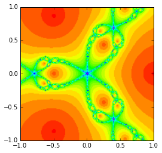

Jupyter Magic Commands
Jupyter has a system of commands we call ‘magics’ that provide effectively a mini command language that is orthogonal to the syntax of Python and is extensible by the user with new commands. Magics are meant to be typed interactively, so they use command-line conventions, such as using whitespace for separating arguments, dashes for options and other conventions typical of a command-line environment.
Magics come in two kinds:
Line magics: these are commands prepended by one % character and whose arguments only extend to the end of the current line.
Cell magics: these use two percent characters as a marker (%%), and they receive as argument both the current line where they are declared and the whole body of the cell.
|
|
|
Pinging www.google.com [74.125.228.242] with 32 bytes of data:
Reply from 74.125.228.242: bytes=32 time=37ms TTL=52
Reply from 74.125.228.242: bytes=32 time=35ms TTL=52
Reply from 74.125.228.242: bytes=32 time=32ms TTL=52
Reply from 74.125.228.242: bytes=32 time=33ms TTL=52
Ping statistics for 74.125.228.242:
Packets: Sent = 4, Received = 4, Lost = 0 (0% loss),
Approximate round trip times in milli-seconds:
Minimum = 32ms, Maximum = 37ms, Average = 34ms
|
Type help() for interactive help, or help(object) for help about object.
|
|
Available line magics:
%alias %alias_magic %autocall %automagic %autosave %bookmark %cd %clear %cls %colors %config %connect_info %copy %ddir %debug %dhist %dirs %doctest_mode %echo %ed %edit %env %gui %hist %history %install_default_config %install_ext %install_profiles %killbgscripts %ldir %less %load %load_ext %loadpy %logoff %logon %logstart %logstate %logstop %ls %lsmagic %macro %magic %matplotlib %mkdir %more %notebook %page %pastebin %pdb %pdef %pdoc %pfile %pinfo %pinfo2 %popd %pprint %precision %profile %prun %psearch %psource %pushd %pwd %pycat %pylab %qtconsole %quickref %recall %rehashx %reload_ext %ren %rep %rerun %reset %reset_selective %rmdir %run %save %sc %set_env %store %sx %system %tb %time %timeit %unalias %unload_ext %who %who_ls %whos %xdel %xmode
Available cell magics:
%%! %%HTML %%SVG %%bash %%capture %%cmd %%debug %%file %%html %%javascript %%latex %%perl %%prun %%pypy %%python %%python2 %%python3 %%ruby %%script %%sh %%svg %%sx %%system %%time %%timeit %%writefile
Automagic is ON, % prefix IS NOT needed for line magics.
|
|
|
Hello world!
|
ERROR: No traceback has been produced, nothing to debug.
|
100 loops, best of 3: 6.59 ms per loop
|
|
'C:\\Windows'
|
# brings up a documentation pane with an overview of IPython's feature
?
# quick reference guide
%quickref
# use the ! operator to run system shell commands
!ping www.google.com
# several ways to interactively access help documentation
help
# help module for magic commands
%magic
# list of all available magic commands
%lsmagic
# bring up the help module for a specific command
%timeit?
# the ? syntax also works for any generic object
x = 5
x?
# run a python script from within the notebook
%run scripts/hello
# debug a statement either in-line or after the fact
%debug
# time the execution of a statement
import numpy as np
%timeit np.linalg.eigvals(np.random.rand(100,100))
# additional magic can be loaded using load_ext
%load_ext Cython
# list all environment variables or specific variables
%env SYSTEMROOT
# print the cache of previously executed commands
%history
|
|
[0murllib[0m[1;33m.[0m[0murlopen[0m[1;33m([0m[0murl[0m[1;33m,[0m [0mdata[0m[1;33m=[0m[0mNone[0m[1;33m,[0m [0mproxies[0m[1;33m=[0m[0mNone[0m[1;33m,[0m [0mcontext[0m[1;33m=[0m[0mNone[0m[1;33m)[0m[1;33m[0m[0m
|
|
np urllib x
|
Variable Type Data/Info
------------------------------
np module <module 'numpy' from 'C:\<...>ages\numpy\__init__.pyc'>
urllib module <module 'urllib' from 'C:<...>Anaconda\lib\urllib.pyc'>
x int 5
|

|
1089400 function calls (1089026 primitive calls) in 1.218 seconds
Ordered by: internal time
List reduced from 458 to 10 due to restriction <10>
ncalls tottime percall cumtime percall filename:lineno(function)
40000 0.355 0.000 0.823 0.000 <ipython-input-20-38d8350aa4f3>:10(newton)
1 0.336 0.336 1.218 1.218 <ipython-input-20-38d8350aa4f3>:19(plot_newton_iters)
324388 0.204 0.000 0.204 0.000 <ipython-input-20-38d8350aa4f3>:4(f)
324388 0.199 0.000 0.199 0.000 <ipython-input-20-38d8350aa4f3>:7(fprime)
40004 0.037 0.000 0.037 0.000 {range}
324392 0.027 0.000 0.027 0.000 {abs}
421 0.003 0.000 0.006 0.000 path.py:199(_update_values)
837 0.003 0.000 0.004 0.000 weakref.py:47(__init__)
996 0.002 0.000 0.002 0.000 {numpy.core.multiarray.array}
424 0.002 0.000 0.002 0.000 {method 'reduce' of 'numpy.ufunc' objects}
<pstats.Stats instance at 0x000000000C774D48>
|
Once deleted, variables cannot be recovered. Proceed (y/[n])? y